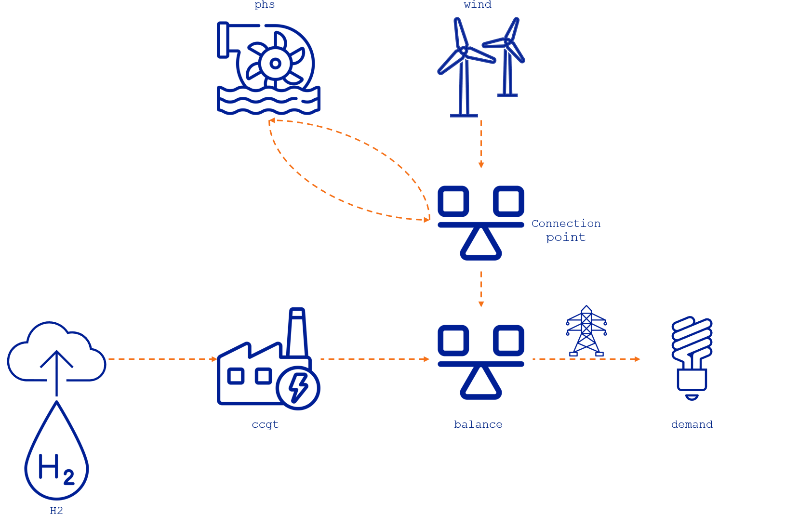

Concepts
- Concepts
- Summary
- Flexible Connection of Energy Assets
- Flexible Time Resolution
- Flexible Time Resolution in the Unit Commitment and Ramping Constraints
- Ramping in Assets with Multiple Outputs
- Unit Commitment in Assets with Constant Time Resolution
- Unit Commitment and Ramping in Assets with Flexible Time Resolution that are Multiple of Each Other
- Unit Commitment and Ramping in Assets with Flexible Time Resolution that are not Multiple of Each Other
- Unit Commitment and Ramping Case Study Results
- Storage Modeling
Summary
TulipaEnergyModel.jl incorporates two fundamental concepts that serve as the foundation of the optimization model:
- Energy Assets: representation of a physical asset that can produce, consume, store, balance, or convert energy. Some examples of what these assets can represent are:
- Producer: e.g., wind turbine, solar panel
- Consumer: e.g., electricity demand, heat demand
- Storage: e.g., battery, pumped-hydro storage
- Balancing Hub: e.g., an electricity network that serves as a connection among other energy assets
- Conversion: e.g., power plants, electrolyzers
- Flows: representation of the connections among assets, e.g., pipelines, transmission lines, or simply the energy production that goes from one asset to another.
In a nutshell, the model guarantees a balance of energy for the various types of assets while considering the flow limits. It considers a set of representative periods (e.g., days or weeks) for a given timeframe (e.g., a year) the user wants to analyze. Therefore, the model has two types of temporal (time) constraints to consider the different chronology characteristics of the assets:
- Intra-temporal Constraints: These constraints limit the asset or flow within a representative period. The intra-temporal constraints help to characterize the short-term operational dynamics of the assets. So far, the model considers balance and flow limitations within the representative period, but future developments will include unit commitment, ramping, and reserve constraints.
- Inter-temporal Constraints: These constraints combine the information of the representative periods and create limitations between them to recover chronological information across the whole timeframe. The inter-temporal constraints help to characterize the long-term operational dynamics of the assets (e.g., seasonality). So far, the model uses this type of constraint to model seasonal storage. Still, future developments will include, for example, maximum or minimum production/consumption for a year (or any timeframe).
The mathematical formulation shows an overview of these constraints and the variables in the model.
Another essential concept in the model is the flexible time resolution, which allows for each asset to be considered in a single timestep (e.g., 1, 2, 3...) or in a range of timesteps (e.g., 1:3, meaning that the asset's variable represents the value of timesteps 1, 2, and 3). This concept allows the modeling of different dynamics depending on the asset; for instance, electricity assets can be modeled hourly, whereas hydrogen assets can be modeled in a 6-hour resolution (avoiding creating unnecessary constraints and variables).
The following sections explain these concepts in more detail.
Flexible Connection of Energy Assets
In energy system modeling, it is becoming common to have hybrid assets like storage + renewable (e.g., battery + solar), electrolyzer + renewable (e.g., electrolyzer + wind), or renewable + hydro (e.g., solar + hydro) that are located at the same site and share a common connection point to the grid. The standard method of modeling these assets requires extra variables and constraints for them to function correctly. For example, flows from the grid are not allowed, as they either avoid charging from the grid or require green hydrogen production. Therefore, hybrid connections typically require an additional node to regulate this connection with the grid.
The representation of the energy system in TulipaEnergyModel.jl is based on Graph Theory, which deals with the connection between vertices by edges. This representation provides a more flexible framework to model energy assets in the system as vertices and flows between energy assets as edges. By connecting assets directly to each other (i.e., without having a node in between), we reduce the number of variables and constraints needed to represent hybrid configurations, thus reducing the model size.
Consider the following example to demonstrate the benefits of using a graph theory approach. In the classic connection approach, the nodes play a crucial role in modeling. For instance, every asset must be connected to a node with balance constraints. When a storage asset and a renewable asset are in a hybrid connection like the one described before, a connection point is needed to connect the hybrid configuration to the rest of the system. Therefore, to consider the hybrid configuration of a storage asset and a renewable asset, we must introduce a node (i.e., a connection point) between these assets and the external power grid (i.e., a balance point), as shown in the following figure:

In this system, the phs storage asset charges and discharges from the connection point, while the wind turbine produces power that goes directly to the connection point. This connection point is connected to the external power grid through a transmission line that leads to a balance hub that connects to other assets. Essentially, the connection point acts as a balancing hub point for the assets in this hybrid configuration. Furthermore, these hybrid configurations impose an extra constraint to avoid storage charges from the power grid.
Let's consider the modeling approach in TulipaEnergyModel.jl. As nodes are no longer needed to connect assets, we can connect them directly to each other, as shown in the figure below:

By implementing this approach, we can reduce the number of variables and constraints involved. For example, the balance constraint in the intermediate node and the extra constraint to avoid the storage charging from the power grid are no longer needed. Additionally, we can eliminate the variable determining the flow between the intermediate node and the power grid, because the flow from phs to balance can directly link to the external grid. The section comparison of different modeling approaches shows the quantification of these reductions.
This example of a phs and a wind asset is useful for illustrating the advantages of this modeling approach and will be reused in the following sections. However, please keep in mind that there are other applications of hybrid configurations, such as battery-solar, hydro-solar, and electrolyzer-wind.
Flexible Time Resolution
One of the core features of TulipaEnergyModel.jl is that it can handle different time resolutions on the assets and the flows. Typically, the time resolution in an energy model is hourly, like in the following figure where we have a 6-hour energy system:

Therefore, for this simple example, we can determine the number of constraints and variables in the optimization problem:
Number of variables: 42 since we have six connections among assets (i.e., 6 flows x 6 hours = 36 variables) and one storage asset (i.e., 1 storage level x 6 h = 6 variables)
Number of constraints: 72, which are:
- 24 from the maximum output limit of the assets that produce, convert, or discharge energy (i.e.,
H2,wind,ccgt, andphs) for each hour (i.e., 4 assets x 6 h = 24 constraints) - 6 from the maximum input limit of the storage or charging limit for the
phs - 6 from the maximum storage level limit for the
phs - 12 from the import and export limits for the transmission line between the
balancehub and thedemand - 24 from the energy balance on the consumer, hub, conversion, and storage assets (i.e.,
demand,balance,ccgt, andphs) for each hour (i.e., 4 assets x 6 h = 24 constraints)
- 24 from the maximum output limit of the assets that produce, convert, or discharge energy (i.e.,
Depending on the input data and the level of detail you want to model, hourly resolution in all the variables might not be necessary. TulipaEnergyModel.jl can have different time resolutions for each asset and flow to simplify the optimization problem and approximate hourly representation. This feature is useful for large-scale energy systems that involve multiple sectors, as detailed granularity is not always necessary due to the unique temporal dynamics of each sector. For instance, we can use hourly resolution for the electricity sector and six-hour resolution for the hydrogen sector. We can couple multiple sectors, each with its own temporal resolution.
Let's explore the flexibility of time resolution with a few examples.
The following table shows the user input data for the definition of asset time resolution. Please note that the values presented in this example are just for illustrative purposes and do not represent a realistic case.
| Row | asset | year | rep_period | specification | partition |
|---|---|---|---|---|---|
| String7 | Int64 | Int64 | String7 | Int64 | |
| 1 | H2 | 2030 | 1 | uniform | 6 |
| 2 | phs | 2030 | 1 | uniform | 6 |
The table shows that the H2 producer and the phs storage have a uniform definition of 6 hours. This definition means we want to represent the H2 production profile and the storage level of the phs every six hours.
The same time resolution can be specified for the flows, for example (again, the values are for illustrative purposes and do not represent a realistic case):
| Row | from_asset | to_asset | year | rep_period | specification | partition |
|---|---|---|---|---|---|---|
| String7 | String7 | Int64 | Int64 | String7 | String7 | |
| 1 | H2 | ccgt | 2030 | 1 | uniform | 6 |
| 2 | wind | balance | 2030 | 1 | math | 1x2+1x4 |
| 3 | wind | phs | 2030 | 1 | uniform | 3 |
| 4 | phs | balance | 2030 | 1 | math | 1x4+1x2 |
| 5 | balance | demand | 2030 | 1 | uniform | 3 |
The table shows a uniform definition for the flow from the hydrogen producer (H2) to the conversion asset (ccgt) of 6 hours, from the wind producer (wind) to the storage (phs) of 3 hours, and from the balance hub (balance) to the consumer (demand) of 3 hours, too. In addition, the flow from the wind producer (wind) to the balance hub (balance) is defined using the math specification of 1x2+1x4, meaning that there are two time blocks, one of two hours (i.e., 1:2) and another of four hours (i.e., 3:6). Finally, the flow from the storage (phs) to the balance hub (balance) is defined using the math specification of 1x4+1x2, meaning that there are two time blocks, one of four hours (i.e., 1:4) and another of two hours (i.e., 5:6).
The following figure illustrates these definitions on the example system.

So, let's recap:
- The hydrogen producer (
H2) is in a 6-hour resolution represented by the range1:6, meaning that the balance of the hydrogen produced is for every 6 hours. - The flow from the hydrogen producer to the ccgt power plant (
H2,ccgt) is also in a 6-hour resolution1:6. - The flow from the ccgt power plant to the balance hub (
ccgt, balance) has hourly resolution[1,2,3,4,5,6]. - The
ccgtis a conversion plant that takes hydrogen to produce electricity. Since both sectors have different time resolutions, the energy balance in the conversion asset is defined in the lowest resolution connecting to the asset. In this case, the energy balance in theccgtis defined every 6 hours, i.e., in the range1:6. - The
windproducer has an hourly profile of electricity production, so the resolution of the asset is hourly. - The
windproducer output has two connections, one to thebalancehub and the other to the pumped-hydro storage (phs) with different resolutions:- The flow from the wind producer to the phs storage (
wind, phs) has a uniform resolution of two blocks from hours 1 to 3 (i.e.,1:3) and from hours 4 to 6 (i.e.,4:6). - The flow from the wind producer to the balance hub (
wind, balance) has a variable resolution of two blocks, too, but from hours 1 to 2 (i.e.,1:2) and from hours 3 to 6 (i.e.,3:6).
- The flow from the wind producer to the phs storage (
- The
phsis in a 6-hour resolution represented by the range1:6, meaning the storage balance is determined every 6 hours. - The flow from the phs to the balance (
phs, balance) represents the discharge of thephs. This flow has a variable resolution of two blocks from hours 1 to 4 (i.e.,1:4) and from hours 5 to 6 (i.e.,5:6), which differs from the one defined for the charging flow from thewindasset. - The
demandconsumption has hourly input data with one connection to thebalancehub:- The flow from the balance hub to the demand (
balance, demand) has a uniform resolution of 3 hours; therefore, it has two blocks, one from hours 1 to 3 (i.e.,1:3) and the other from hours 4 to 6 (i.e.,4:6).
- The flow from the balance hub to the demand (
- The
balancehub integrates all the different assets with their different resolutions. The lowest resolution of all connections determines the balance equation for this asset. Therefore, the resulting resolution is into two blocks, one from hours 1 to 4 (i.e.,1:4) and the other from hours 5 to 6 (i.e.,5:6).
Note: This example demonstrates that different time resolutions can be assigned to each asset and flow in the model. Additionally, the resolutions do not need to be uniform and can vary throughout the horizon.
The complete input data for this example can be found here.
Due to the flexible resolution, we must explicitly state how the constraints are constructed. For each constraint, three things need to be considered:
- Whether it is type power or type energy.
- type power: highest resolution
- type energy: lowest resolution (multiplied by durations)
- How the resolution is determined (regardless of whether it is highest or lowest): the incoming flows, the outgoing flows, or a combination of both.
- How the related parameters are treated. We use two methods of aggregation, sum or mean.
Below is the table outlining the details for each type of constraint. Note min means highest resolution, and max means lowest resolution.
| Name | Variables involved | Profile involved | Constraint type | Resolution of the constraints | Profile aggregation |
|---|---|---|---|---|---|
| Consumer Balance | inputs, outputs | demand | power | min(incoming flows, outgoing flows) | mean |
| Storage Balance | inputs, outputs, storage level | inflows | energy | max(asset, min(incoming flows, outgoing flows)) | sum |
| Hub Balance | inputs, outputs | - | power | min(incoming flows, outgoing flows) | - |
| Conversion Balance | inputs, outputs | - | energy | max(incoming flows, outgoing flows) | - |
| Producers Capacity Constraints | outputs | availability | power | min(outgoing flows) | mean |
| Storage Capacity Constraints (outgoing) | outputs | - | power | min(outgoing flows) | - |
| Conversion Capacity Constraints (outgoing) | outputs | - | power | min(outgoing flows) | - |
| Conversion Capacity Constraints (incoming) | inputs | - | power | min(incoming flows) | - |
| Storage Capacity Constraints (incoming) | inputs | - | power | min(incoming flows) | - |
| Transport Capacity Constraints (upper bounds) | flow | availability | power | if it connects two hubs or demands then max(hub a,hub b), otherwise its own | mean |
| Transport Capacity Constraints (lower bounds) | flow | availability | power | if it connects two hubs or demands then max(hub a,hub b), otherwise its own | mean |
| Maximum Energy Limits (outgoing) | outputs | max_energy | energy | Determine by timeframe partitions. The default value is for each period in the timeframe | sum |
| Minimum Energy Limits (outgoing) | outputs | min_energy | energy | Determine by timeframe partitions. The default value is for each period in the timeframe | sum |
| Maximum Output Flow with Unit Commitment | outputs, units_on | availability | power | min(outgoing flows, units_on) | mean |
| Minimum Output Flow with Unit Commitment | outputs, units_on | availability | power | min(outgoing flows, units_on) | mean |
| Maximum Ramp Up Flow with Unit Commitment | outputs, units_on | availability | power | min(outgoing flows, units_on) | mean |
| Maximum Ramp Down Flow with Unit Commitment | outputs, units_on | availability | power | min(outgoing flows, units_on) | mean |
| Maximum Ramp Up Flow without Unit Commitment | outputs | availability | power | min(outgoing flows) | mean |
| Maximum Ramp Down Flow without Unit Commitment | outputs | availability | power | min(outgoing flows) | mean |
For this basic example, we can describe the balance and capacity constraints in the model. For the sake of simplicity, we consider only the intra-temporal constraints, the representative period index is dropped from the equations, and there are no investment variables in the equations.
Energy Balance Constraints
In the following sections, we lay out all the balance constraints of this example.
Storage Balance
As shown in the table, the resolution of the storage balance is energy, which is calculated by max(asset, min(incoming flows, outgoing flows)). The resolutions of the incoming and outgoing flows of the storage are 1:3, 4:6, 1:4, and 5:6, resulting in a minimum resolution of 2. The resolution of the storage is 6. Then, max(asset, min(incoming flows, outgoing flows)) becomes max(6, min(3, (4, 2))) which results in 6, and thus this balance is for every 6 hours. The charging and discharging flows are multiplied by their durations to account for the energy in the range 1:6.
\[\begin{aligned} & \text{storage\_balance}_{\text{phs},1:6}: \\ & \qquad v^{\text{intra-storage}}_{\text{phs},1:6} = 3 \cdot p^{\text{eff}}_{(\text{wind},\text{phs})} \cdot v^{\text{flow}}_{(\text{wind},\text{phs}),1:3} + 3 \cdot p^{\text{eff}}_{(\text{wind},\text{phs})} \cdot v^{\text{flow}}_{(\text{wind},\text{phs}),4:6} \\ & \qquad \quad - \frac{4}{p^{\text{eff}}_{(\text{phs},\text{balance})}} \cdot v^{\text{flow}}_{(\text{phs},\text{balance}),1:4} - \frac{2}{p^{\text{eff}}_{(\text{phs},\text{balance})}} \cdot v^{\text{flow}}_{(\text{phs},\text{balance}),5:6} \\ \end{aligned}\]
Consumer Balance
The flows coming from the balancing hub are defined every 3 hours. Therefore, the flows impose the lowest resolution and the demand is balanced every 3 hours. The input demand is aggregated as the mean of the hourly values in the input data. As with the storage balance, the flows are multiplied by their durations.
\[\begin{aligned} & \text{consumer\_balance}_{\text{demand},1:3}: \\ & \qquad v^{\text{flow}}_{(\text{balance},\text{demand}),1:3} = p^{\text{peak demand}}_{\text{demand}} \cdot \frac{\sum_{b=1}^{3} p^{\text{demand profile}}_{\text{demand},b}}{3} \\ & \text{consumer\_balance}_{\text{demand},4:6}: \\ & \qquad v^{\text{flow}}_{(\text{balance},\text{demand}),4:6} = p^{\text{peak demand}}_{\text{demand}} \cdot \frac{\sum_{b=4}^{6} p^{\text{demand profile}}_{\text{demand},b}}{3} \\ \end{aligned}\]
Hub Balance
The hub balance is quite interesting because it integrates several flow resolutions. Remember that we didn't define any specific time resolution for this asset. Therefore, the highest resolution of all incoming and outgoing flows in the horizon implies that the hub balance must be imposed for all 6 blocks. The balance must account for each flow variable's duration in each block.
\[\begin{aligned} & \text{hub\_balance}_{\text{balance},1:1}: \\ & \qquad v^{\text{flow}}_{(\text{balance},\text{demand}),1:3} = v^{\text{flow}}_{(\text{ccgt},\text{balance}), 1:1} + v^{\text{flow}}_{(\text{wind},\text{balance}),1:2} + v^{\text{flow}}_{(\text{phs},\text{balance}),1:4} \\ & \text{hub\_balance}_{\text{balance},2:2}: \\ & \qquad v^{\text{flow}}_{(\text{balance},\text{demand}),1:3} = v^{\text{flow}}_{(\text{ccgt},\text{balance}), 2:2} + v^{\text{flow}}_{(\text{wind},\text{balance}),1:2} + v^{\text{flow}}_{(\text{phs},\text{balance}),1:4} \\ & \text{hub\_balance}_{\text{balance},3:3}: \\ & \qquad v^{\text{flow}}_{(\text{balance},\text{demand}),1:3} = v^{\text{flow}}_{(\text{ccgt},\text{balance}), 3:3} + v^{\text{flow}}_{(\text{wind},\text{balance}),3:6} + v^{\text{flow}}_{(\text{phs},\text{balance}),1:4} \\ & \text{hub\_balance}_{\text{balance},4:4}: \\ & \qquad v^{\text{flow}}_{(\text{balance},\text{demand}),4:6} = v^{\text{flow}}_{(\text{ccgt},\text{balance}), 4:4} + v^{\text{flow}}_{(\text{wind},\text{balance}),3:6} + v^{\text{flow}}_{(\text{phs},\text{balance}),1:4}\\ & \text{hub\_balance}_{\text{balance},5:5}: \\ & \qquad v^{\text{flow}}_{(\text{balance},\text{demand}),4:6} = v^{\text{flow}}_{(\text{ccgt},\text{balance}), 5:5} + v^{\text{flow}}_{(\text{wind},\text{balance}),3:6} + v^{\text{flow}}_{(\text{phs},\text{balance}),5:6} \\ & \text{hub\_balance}_{\text{balance},6:6}: \\ & \qquad v^{\text{flow}}_{(\text{balance},\text{demand}),4:6} = v^{\text{flow}}_{(\text{ccgt},\text{balance}), 6:6} + v^{\text{flow}}_{(\text{wind},\text{balance}),3:6} + v^{\text{flow}}_{(\text{phs},\text{balance}),5:6} \\ \end{aligned}\]
Conversion Balance
The flows connected to the CCGT conversion unit have different resolutions, too. In this case, the hydrogen imposes the lowest resolution; therefore, the energy balance in this asset is also every 6 hours.
\[\begin{aligned} & \text{conversion\_balance}_{\text{ccgt},1:6}: \\ & \qquad 6 \cdot p^{\text{eff}}_{(\text{H2},\text{ccgt})} \cdot v^{\text{flow}}_{(\text{H2},\text{ccgt}),1:6} = \frac{1}{p^{\text{eff}}_{(\text{ccgt},\text{balance})}} \sum_{b=1}^{6} v^{\text{flow}}_{(\text{ccgt},\text{balance}),b} \\ \end{aligned}\]
Capacity Constraints
All capacity constraints are defined in the highest resolution to guarantee that the flows are below the limits of each asset capacity.
Storage Capacity Constraints
Since the storage unit only has one input and output, the capacity limit constraints are in the same resolution as the individual flows. Therefore, the constraints for the outputs of the storage (i.e., discharging capacity limit) are:
\[\begin{aligned} & \text{max\_output\_flows\_limit}_{\text{phs},1:4}: \\ & \qquad v^{\text{flow}}_{(\text{phs},\text{balance}),1:4} \leq p^{\text{init capacity}}_{\text{phs}} \\ & \text{max\_output\_flows\_limit}_{\text{phs},5:6}: \\ & \qquad v^{\text{flow}}_{(\text{phs},\text{balance}),5:6} \leq p^{\text{init capacity}}_{\text{phs}} \\ \end{aligned}\]
And the constraints for the inputs of the storage (i.e., charging capacity limit) are:
\[\begin{aligned} & \text{max\_input\_flows\_limit}_{\text{phs},1:3}: \\ & \qquad v^{\text{flow}}_{(\text{wind},\text{phs}),1:3} \leq p^{\text{init capacity}}_{\text{phs}} \\ & \text{max\_input\_flows\_limit}_{\text{phs},4:6}: \\ & \qquad v^{\text{flow}}_{(\text{wind},\text{phs}),4:6} \leq p^{\text{init capacity}}_{\text{phs}} \\ \end{aligned}\]
Conversion Capacity Constraints
Similarly, each outflow is limited to the ccgt capacity for the conversion unit.
\[\begin{aligned} & \text{max\_output\_flows\_limit}_{\text{ccgt},b}: \\ & \qquad v^{\text{flow}}_{(\text{ccgt},\text{balance}),b} \leq p^{\text{init capacity}}_{\text{ccgt}} \quad \forall b \in [1,6] \\ \end{aligned}\]
Producer Capacity Constraints
The wind producer asset is interesting because the output flows are in different resolutions, i.e., 1:2, 3:6, 1:3, and 4:6. The highest resolution is 1:2, 3, and 4:6. Therefore, the constraints are as follows:
\[\begin{aligned} & \text{max\_output\_flows\_limit}_{\text{wind},1:2}: \\ & \qquad v^{\text{flow}}_{(\text{wind},\text{balance}),1:2} + v^{\text{flow}}_{(\text{wind},\text{phs}),1:3} \leq \frac{p^{\text{init capacity}}_{\text{wind}}}{2} \cdot \sum_{b=1}^{2} p^{\text{availability profile}}_{\text{wind},b} \\ & \text{max\_output\_flows\_limit}_{\text{wind},3}: \\ & \qquad v^{\text{flow}}_{(\text{wind},\text{balance}),3:6} + v^{\text{flow}}_{(\text{wind},\text{phs}),1:3} \leq p^{\text{init capacity}}_{\text{wind}} \cdot p^{\text{availability profile}}_{\text{wind},3} \\ & \text{max\_output\_flows\_limit}_{\text{wind},4:6}: \\ & \qquad v^{\text{flow}}_{(\text{wind},\text{balance}),3:6} + v^{\text{flow}}_{(\text{wind},\text{phs}),4:6} \leq \frac{p^{\text{init capacity}}_{\text{wind}}}{2} \cdot \sum_{b=5}^{6} p^{\text{availability profile}}_{\text{wind},b} \\ \end{aligned}\]
Since the flow variables $v^{\text{flow}}_{(\text{wind}, \text{balance}),1:2}$ and $v^{\text{flow}}_{(\text{wind}, \text{balance}),1:3}$ represent power, the first constraint sets the upper bound of the power for both timestep 1 and 2, by assuming an average capacity across these two timesteps. The same applies to the other two constraints.
The hydrogen (H2) producer capacity limit is straightforward, since both the asset and the flow definitions are in the same time resolution:
\[\begin{aligned} & \text{max\_output\_flows\_limit}_{\text{H2},1:6}: \\ & \qquad v^{\text{flow}}_{(\text{H2},\text{ccgt}),1:6} \leq p^{\text{init capacity}}_{\text{H2}} \cdot p^{\text{availability profile}}_{\text{H2},1:6} \\ \end{aligned}\]
Transport Capacity Constraints
For the connection from the hub to the demand, there are associated transmission capacity constraints, which are in the same resolution as the flow:
\[\begin{aligned} & \text{max\_transport\_flows\_limit}_{(\text{balance},\text{demand}),1:3}: \\ & \qquad v^{\text{flow}}_{(\text{balance},\text{demand}),1:3} \leq p^{\text{init export capacity}}_{(\text{balance},\text{demand})} \\ & \text{max\_transport\_flows\_limit}_{(\text{balance},\text{demand}),4:6}: \\ & \qquad v^{\text{flow}}_{(\text{balance},\text{demand}),4:6} \leq p^{\text{init export capacity}}_{(\text{balance},\text{demand})} \\ \end{aligned}\]
\[\begin{aligned} & \text{min\_transport\_flows\_limit}_{(\text{balance},\text{demand}),1:3}: \\ & \qquad v^{\text{flow}}_{(\text{balance},\text{demand}),1:3} \geq - p^{\text{init import capacity}}_{(\text{balance},\text{demand})} \\ & \text{min\_transport\_flows\_limit}_{(\text{balance},\text{demand}),4:6}: \\ & \qquad v^{\text{flow}}_{(\text{balance},\text{demand}),4:6} \geq - p^{\text{init import capacity}}_{(\text{balance},\text{demand})} \\ \end{aligned}\]
Storage Level limits
Since the system has a storage asset, we must limit the maximum storage level. The phs time resolution is defined for every 6 hours, so we only have one constraint.
\[\begin{aligned} & \text{max\_storage\_level\_limit}_{\text{phs},1:6}: \\ & \qquad v^{\text{intra-storage}}_{\text{phs},1:6} \leq p^{\text{init storage capacity}}_{\text{phs}} \end{aligned}\]
Comparison of Different Modeling Approaches
This section quantifies the advantages of the flexible connection and flexible time resolution in the TulipaEnergyModel.jl modeling approach. So, let us consider three different approaches based on the same example:
- Classic approach with hourly resolution: This approach needs an extra asset,
node, to create the hybrid operation of thephsandwindassets. - Flexible connection with hourly resolution: This approach uses the flexible connection to represent the hybrid operation of the
phsandwindassets. - Flexible connection and flexible time: This approach uses both features, the flexible connection and the flexible time resolution.
Note: The flexibility of TulipaEnergyModel.jl allows any of these three modeling approaches.
The table below shows the constraints and variables for each approach over a 6-hour horizon. These results show the potential of flexible connections and time resolution for reducing the size of the optimization model.
| Modeling approach | Nº Variables | Nº Constraints | Objective Function |
|---|---|---|---|
| Classic approach with hourly resolution | 48 | 84 | 28.4365 |
| Flexible connection with hourly resolution | 42 | 72 | 28.4365 |
| Flexible connection and time resolution | 16 | 29 | 28.4587 |
By comparing the classic approach with the other methods, we can analyze their differences:
- The flexible connection with hourly resolution reduces 6 variables ($12.5\%$) and 12 constraints ($\approx 14\%$). Notice that we include the 6 extra constraints related to not allowing charging from the grid, although these constraints can also be modeled as bounds. Finally, the objective function value is the same, since we use an hourly time resolution in both cases.
- The combination of features reduces 32 variables ($\approx 67\%$) and 55 constraints ($\approx 65\%$) with an approximation error of $\approx 0.073\%$.
The level of reduction and approximation error will depend on the case study. Some cases that would benefit from this feature include:
Coupling different energy sectors with various dynamics. For instance, methane, hydrogen, and heat sectors can be represented in energy models with lower resolutions (e.g., 4, 6, or 12h) than the electricity sector, usually modeled in higher resolutions (e.g., 1h, 30 min).
Having high resolutions for all assets in a large-scale case study may not be necessary. For example, if analyzing a European case study focusing on a specific country like The Netherlands, hourly details for distant countries (such as Portugal and Spain) may not be required. However, one would still want to consider their effect on The Netherlands without causing too much computational burden. In such cases, flexible time resolution can maintain hourly details in the focus country, while reducing the detail in distant countries by increasing their resolution (to two hours or more). This reduction allows a broader scope without over-burdening computation.
Flexible Time Resolution in the Unit Commitment and Ramping Constraints
In the previous section, we have seen how the flexible temporal resolution is handled for the model's flow capacity and balance constraints. Here, we show how flexible time resolution is applied when considering the model's unit commitment and ramping constraints. Let's consider the example in the folder test/inputs/UC-ramping to explain how all these constraints are created in TulipaEnergyModel.jl when having the flexible time resolution.

The example demonstrates various assets that supply demand. Each asset has different input data in the assets-data file, which activates different sets of constraints based on the method. For example, the gas producer has ramping constraints but not unit commitment constraints, while the ocgt conversion has unit commitment constraints but not ramping constraints. Lastly, the ccgt and smr assets both have unit commitment and ramping constraints.
| Row | name | type | capacity | initial_units | unit_commitment | ramping |
|---|---|---|---|---|---|---|
| String7 | String15 | Int64 | Int64? | Bool? | Bool? | |
| 1 | gas | producer | 1800 | 1 | false | true |
| 2 | ocgt | conversion | 100 | 0 | true | false |
| 3 | ccgt | conversion | 200 | 1 | true | true |
| 4 | smr | producer | 200 | 1 | true | true |
| 5 | wind | producer | 100 | 0 | false | false |
| 6 | solar | producer | 50 | 0 | false | false |
| 7 | ens | producer | 1150 | 1 | false | false |
The assets-rep-periods-partitions file defines the time resolution for the assets in the partition column. For instance, here we can see that the time resolutions are 3h for the ccgt and 6h for the smr. These values mean that the unit commitment variables (e.g., units_on) in the model have three and six hours resolution, respectively.
| Row | asset | specification | partition |
|---|---|---|---|
| String7 | String7 | Int64 | |
| 1 | ccgt | uniform | 3 |
| 2 | smr | uniform | 6 |
The flows-rep-periods-partitions file defines the time resolution for the flows. In this example, we have that the flows from the gas asset to the ccgt and from the ccgt asset to the demand are in a 2h resolution.
| Row | from_asset | to_asset | specification | partition |
|---|---|---|---|---|
| String7 | String7 | String7 | Int64 | |
| 1 | gas | ccgt | uniform | 2 |
| 2 | ccgt | demand | uniform | 2 |
The default value for the assets and flows partitions is 1 hour. This means that assets and flows not in the previous tables are considered on an hourly basis in the model.
Important: It's not recommended to set up the input data
partitionsin such a way that theflowvariables have a lower resolution than theunits_on. This is because doing so will result in constraints that fix the value of theunits_onin the timestep block where theflowis defined, leading to unnecessary extra variable constraints in the model. For instance, if theunits_onare hourly and theflowis every two hours, then a non-zeroflowin the timestep block 1:2 will require theunits_onin timestep blocks 1:1 and 2:2 to be the same and equal to one. Therefore, the time resolution of theunits_onshould always be lower than or equal to the resolution of theflowin the asset.
Remember that the section mathematical formulation shows the unit commitment and ramping constraints in the model considering an uniform time resolution as a reference.
With this information, we can analyze the constraints in each of the following cases:
- Ramping in assets with multiple outputs
- Unit commitment in assets with constant time resolution
- Unit commitment and ramping in assets with flexible time resolution that are multiple of each other
- Unit commitment and ramping in assets with flexible time resolution that are not multiple of each other
We will analyze each case in the following sections, considering the constraints resolution defined in the summary table in the flexible time resolution section. For the sake of simplicity, we only show the asset $a$ and timestep block $b_k$ index and the constraints as they appear in the .lp file of the example, i.e., with all the coefficients and RHS values calculated from the input parameters. The .lp file can be exported using the keyword argument write_lp_file = true in the run_scenario function.
Ramping in Assets with Multiple Outputs
In the case of the gas asset, there are two output flows above the minimum operating point with different time resolutions. The ramping constraints follow the highest time resolution of the two flows at each timestep block. Since the highest resolution is always defined by the hourly output of the flow(gas,ocgt), the ramping constraints are also hourly. The figure below illustrates this situation.

Let's now take a look at the resulting constraints in the model.
max_ramp_up(gas): The first constraint starts in the second timestep block and takes the difference between the output flows above the minimum operating point from $b_k =$ 2:2 and $b_k =$ 1:1. Note that since the flow(gas,ccgt) is the same in both timestep blocks, the only variables that appear in this first constraint are the ones associated with the flow(gas,ocgt). The second constraint takes the difference between the output flows from $b_k =$ 3:3 and $b_k =$ 2:2; in this case, there is a change in the flow(gas, ocgt); therefore, the constraint considers both changes in the output flows of the asset. In addition, the ramping parameter is multiplied by the flow duration with the highest resolution, i.e., one hour, which is the duration of the flow(gas,ocgt).
- $b_k =$
2:2: -1flow(gas,ocgt,1:1)+ 1flow(gas,ocgt,2:2)<= 1494 - $b_k =$
3:3: -1flow(gas,ocgt,2:2)+ 1flow(gas,ocgt,3:3)- 1flow(gas,ccgt,1:2)+ 1flow(gas,ccgt,3:4)<= 1494 - $b_k =$
4:4: -1flow(gas,ocgt,3:3)+ 1flow(gas,ocgt,4:4)<= 1494 - $b_k =$
5:5: -1flow(gas,ocgt,4:4)+ 1flow(gas,ocgt,5:5)- 1flow(gas,ccgt,3:4)+ 1flow(gas,ccgt,5:6)<= 1494
For the maximum ramp down we have similiar constraints as the ones shown above.
Unit Commitment in Assets with Constant Time Resolution
The ocgt asset includes both the flow(oct,demand) and the asset time resolution, which defines the resolution of the units_on variable, with a default setting of one hour. As a result, the unit commitment constraints are also set on an hourly basis. This is the conventional method for representing these types of constraints in power system models. The figure below illustrates this situation.

Let's now take a look at the resulting constraints in the model. Because everything is based on an hourly timestep, the equations are simple and easy to understand.
limit_units_on(ocgt): The upper bound of the units_on is the investment variable of the asset
- $b_k =$
1:1: -1assets_investment(ocgt)+ 1units_on(ocgt,1:1)<= 0 - $b_k =$
2:2: -1assets_investment(ocgt)+ 1units_on(ocgt,2:2)<= 0 - $b_k =$
3:3: -1assets_investment(ocgt)+ 1units_on(ocgt,3:3)<= 0
min_output_flow(ocgt): The minimum operating point is 10 MW, so the asset must produce an output flow greater than this value when the unit is online.
- $b_k =$
1:1: 1flow(ocgt,demand,1:1)- 10units_on(ocgt,1:1)>= 0 - $b_k =$
2:2: 1flow(ocgt,demand,2:2)- 10units_on(ocgt,2:2)>= 0 - $b_k =$
3:3: 1flow(ocgt,demand,3:3)- 10units_on(ocgt,3:3)>= 0
max_output_flow(ocgt): The capacity is 100 MW, so the asset must produce an output flow lower than this value when the unit is online.
- $b_k =$
1:1: 1flow(ocgt,demand,1:1)- 100units_on(ocgt,1:1)<= 0 - $b_k =$
2:2: 1flow(ocgt,demand,2:2)- 100units_on(ocgt,2:2)<= 0 - $b_k =$
3:3: 1flow(ocgt,demand,3:3)- 100units_on(ocgt,3:3)<= 0
For the maximum ramp down we have similiar constraints as the ones shown above.
Unit Commitment and Ramping in Assets with Flexible Time Resolution that are Multiple of Each Other
In this case, the smr asset has an output flow(smr,demand) in a hourly basis, but its time resolution (i.e., partition) is every six hours. Therefore, the unist_on variables are defined in timestep block of every six hours. As a result, the unit commitment and ramping constraints are set on highest resolution of both, i.e., the hourly resolution of the flow(smr,demand). The figure below illustrates this situation.

Let's now take a look at the resulting constraints in the model.
limit_units_on(smr): The units_on variables are defined every 6h; therefore, the upper bound of the variable is also every 6h. In addition, the smr is not investable and has one existing unit that limits the commitment variables.
- $b_k =$
1:6: 1units_on(smr,1:6)<= 1 - $b_k =$
7:12: 1units_on(smr,7:12)<= 1 - $b_k =$
13:18: 1units_on(smr,13:18)<= 1 - $b_k =$
19:24: 1units_on(smr,19:24)<= 1
min_output_flow(smr): The minimum operating point is 150 MW, so the asset must produce an output flow greater than this value when the unit is online. Since the units_on variables are defined every 6h, the first six constraints show that the minimum operating point is multiplied by the variable in block 1:6. The next six constraints are multiplied by the units_on in block 7:12, and so on.
- $b_k =$
1:1: 1flow(smr,demand,1:1)- 150units_on(smr,1:6)>= 0 - $b_k =$
2:2: 1flow(smr,demand,2:2)- 150units_on(smr,1:6)>= 0 - $b_k =$
3:3: 1flow(smr,demand,3:3)- 150units_on(smr,1:6)>= 0 - $b_k =$
4:4: 1flow(smr,demand,4:4)- 150units_on(smr,1:6)>= 0 - $b_k =$
5:5: 1flow(smr,demand,5:5)- 150units_on(smr,1:6)>= 0 - $b_k =$
6:6: 1flow(smr,demand,6:6)- 150units_on(smr,1:6)>= 0 - $b_k =$
7:7: 1flow(smr,demand,7:7)- 150units_on(smr,7:12)>= 0 - $b_k =$
8:8: 1flow(smr,demand,8:8)- 150units_on(smr,7:12)>= 0
max_output_flow(smr): The capacity is 200 MW, so the asset must produce an output flow lower than this value when the unit is online. Similiar to the minimum operating point constraint, here the units_on for the timestep block 1:6 are used in the first six constraints, the units_on for the timestep block 7:12 are used in the next six constraints, and so on.
- $b_k =$
1:1: 1flow(smr,demand,1:1)- 200units_on(smr,1:6)<= 0 - $b_k =$
2:2: 1flow(smr,demand,2:2)- 200units_on(smr,1:6)<= 0 - $b_k =$
3:3: 1flow(smr,demand,3:3)- 200units_on(smr,1:6)<= 0 - $b_k =$
4:4: 1flow(smr,demand,4:4)- 200units_on(smr,1:6)<= 0 - $b_k =$
5:5: 1flow(smr,demand,5:5)- 200units_on(smr,1:6)<= 0 - $b_k =$
6:6: 1flow(smr,demand,6:6)- 200units_on(smr,1:6)<= 0 - $b_k =$
7:7: 1flow(smr,demand,7:7)- 200units_on(smr,7:12)<= 0 - $b_k =$
8:8: 1flow(smr,demand,8:8)- 200units_on(smr,7:12)<= 0
max_ramp_up(smr): The ramping capacity is 20MW, so the change in the output flow above the minimum operating point needs to be below that value when the asset is online. For constraints from 2:2 to 6:6, the units_on variable is the same, i.e., units_on at timestep block 1:6. The ramping constraint at timestep block 7:7 shows the units_on from the timestep block 1:6 and 7:12 since the change in the flow includes both variables. Note that if the units_on variable is zero in the timestep block 1:6, then the ramping constraint at timestep block 7:7 allows the asset to go from zero flow to the minimum operating point plus the ramping capacity (i.e., 150 + 20 = 170).
- $b_k =$
2:2: -1flow(smr,demand,1:1)+ 1flow(smr,demand,2:2)- 20units_on(smr,1:6)<= 0 - $b_k =$
3:3: -1flow(smr,demand,2:2)+ 1flow(smr,demand,3:3)- 20units_on(smr,1:6)<= 0 - $b_k =$
4:4: -1flow(smr,demand,3:3)+ 1flow(smr,demand,4:4)- 20units_on(smr,1:6)<= 0 - $b_k =$
5:5: -1flow(smr,demand,4:4)+ 1flow(smr,demand,5:5)- 20units_on(smr,1:6)<= 0 - $b_k =$
6:6: -1flow(smr,demand,5:5)+ 1flow(smr,demand,6:6)- 20units_on(smr,1:6)<= 0 - $b_k =$
7:7: -1flow(smr,demand,6:6)+ 1flow(smr,demand,7:7)+ 150units_on(smr,1:6)- 170units_on(smr,7:12)<= 0 - $b_k =$
8:8: -1flow(smr,demand,7:7)+ 1flow(smr,demand,8:8)- 20units_on(smr,7:12)<= 0 - $b_k =$
9:9: -1flow(smr,demand,8:8)+ 1flow(smr,demand,9:9)- 20units_on(smr,7:12)<= 0
For the maximum ramp down we have similiar constraints as the ones shown above.
Unit Commitment and Ramping in Assets with Flexible Time Resolution that are not Multiple of Each Other
In this case, the ccgt asset has an output flow(ccgt,demand) on a two-hour basis, but its time resolution (i.e., partition) is every three hours. Therefore, the unist_on variables are defined in a timestep block every three hours. This setup means that the flow and unit commitment variables are not multiples of each other. As a result, the unit commitment and ramping constraints are defined on the highest resolution, meaning that we also need the intersections of both resolutions. The figure below illustrates this situation.

Let's now take a look at the resulting constraints in the model.
limit_units_on(ccgt): The units_on variables are defined every 3h; therefore, the upper bound of the variable is also every 3h. In addition, the ccgt is investable and has one existing unit that limits the commitment variables.
- $b_k =$
1:3: -1assets_investment(ccgt)+ 1units_on(ccgt,1:3)<= 1 - $b_k =$
4:6: -1assets_investment(ccgt)+ 1units_on(ccgt,4:6)<= 1 - $b_k =$
7:9: -1assets_investment(ccgt)+ 1units_on(ccgt,7:9)<= 1
min_output_flow(ccgt): The minimum operating point is 50 MW, so the asset must produce an output flow greater than this value when the unit is online. Here, we can see the impact of the constraints of having different temporal resolutions that are not multiple of each other. For instance, the constraint is defined for all the intersections, so 1:2, 3:3, 4:4, 5:6, etc., to ensure that the minimum operating point is correctly defined considering all the timestep blocks of the flow and the units_on variables.
- $b_k =$
1:2: 1flow(ccgt,demand,1:2)- 50units_on(ccgt,1:3)>= 0 - $b_k =$
3:3: 1flow(ccgt,demand,3:4)- 50units_on(ccgt,1:3)>= 0 - $b_k =$
4:4: 1flow(ccgt,demand,3:4)- 50units_on(ccgt,4:6)>= 0 - $b_k =$
5:6: 1flow(ccgt,demand,5:6)- 50units_on(ccgt,4:6)>= 0
max_output_flows(ccgt): The capacity is 200 MW, so the asset must produce an output flow lower than this value when the unit is online. The situation is similar as in the minimum operating point constraint, we have constraints for all the intersections of the resolutions to ensure the correct definition of the maximum capacity.
- $b_k =$
1:2: 1flow(ccgt,demand,1:2)- 200units_on(ccgt,1:3)<= 0 - $b_k =$
3:3: 1flow(ccgt,demand,3:4)- 200units_on(ccgt,1:3)<= 0 - $b_k =$
4:4: 1flow(ccgt,demand,3:4)- 200units_on(ccgt,4:6)<= 0 - $b_k =$
5:6: 1flow(ccgt,demand,5:6)- 200units_on(ccgt,4:6)<= 0
max_ramp_up(ccgt): The ramping capacity is 120MW, so the change in the output flow above the minimum operating point needs to be below that value when the asset is online. When the time resolutions of the flow and units_on are not multiples of each other, we encounter some counterintuitive constraints. For example, consider the constraint at timestep block 4:4. This constraint only involves units_on variables because the flow above the minimum operating point at timestep block 4:4 differs from the previous timestep block 3:3 only in terms of the units_on variables. As a result, the ramping-up constraint establishes a relationship between the units_on variable at 1:3 and 4:6. This means that if the unit is on at timestep 1:3, then it must also be on at timestep 4:6. However, this is redundant because there is already a flow variable defined for 3:4 that ensures this, thanks to the minimum operating point and maximum capacity constraints. Therefore, although this constraint is not incorrect, it is unnecessary due to the flexible time resolutions that are not multiples of each other.
- $b_k =$
3:3: -1flow(ccgt,demand,1:2)+ 1flow(ccgt,demand,3:4)- 120units_on(ccgt,1:3)<= 0 - $b_k =$
4:4: 50units_on(ccgt,1:3)- 170units_on(ccgt,4:6)<= 0 - $b_k =$
5:6: -1flow(ccgt,demand,3:4)+ 1flow(ccgt,demand,5:6)- 120units_on(ccgt,4:6)<= 0 - $b_k =$
7:8: -1flow(ccgt,demand,5:6)+ 1flow(ccgt,demand,7:8)+ 50units_on(ccgt,4:6)- 170units_on(ccgt,7:9)<= 0 - $b_k =$
9:9: -1flow(ccgt,demand,7:8)+ 1flow(ccgt,demand,9:10)- 120units_on(ccgt,7:9)<= 0
For the maximum ramp down we have similiar constraints as the ones shown above.
Important: The time resolutions of the unit commitment constraints do not have to be multiples of each other. However, using multiples of each other can help avoid extra redundant constraints.
Unit Commitment and Ramping Case Study Results
Let's now optimize the model for the data in the example test/inputs/UC-ramping and explore the results. The first result is the unit commitment of the assets with this method, i.e., ocgt, ccgt, and smr. One of the characteristics of having flexible time resolution on the unit commitment variables (e.g., units_on) is that it allows us to consider implicitly minimum up/down times in a simplified manner. For instance, the ccgt asset can only increase the number of units every 3h, and the smr can only start up again after 6h.

Let's now examine the hourly production balance in the results. We can see that the assets with a unit commitment method only produce electricity (e.g., flow to the demand asset) when they are on (units_on >= 1). In addition, the smr has a slow flow change due to its ramping limits.

In this example, we demonstrated the use of unit commitment and ramping constraints with flexible time resolution in the model, and we illustrated what the results look like. The flexible time resolution applied to the unit commitment variables aids in minimizing the number of binary/integer variables in the model and simplifies the representation of the assets' minimum up and down times.
Storage Modeling
Energy storage systems can be broadly classified into two categories: seasonal and non-seasonal storage. Seasonal storage refers to assets that can store energy for more extended periods, usually spanning months or even years. Examples of such assets include hydro reservoirs, hydrogen storage in salt caverns, or empty gas fields. On the other hand, non-seasonal storage refers to assets that can store energy only for a few hours, such as batteries or small pumped-hydro storage units.
Both storage categories can be represented in TulipaEnergyModel.jl using the representative periods approach:
- Non-seasonal storage: When the storage capacity of an asset is lower than the total length of representative periods, like in the case of a battery with a storage capacity of 4 hours and representative periods of 24-hour timesteps, intra-temporal constraints should be applied.
- Seasonal storage: When the storage capacity of an asset is greater than the total length of representative periods, like in the case of a hydroplant with a storage capacity of a month and representative periods of 24-hour timesteps, inter-temporal constraints should be applied.
The equations of intra- and inter-temporal constraints for energy storage are available in the mathematical formulation. An example is shown in the following section to explain these concepts. In addition, the section seasonal and non-seasonal storage setup shows how to set the parameters in the model to consider each type in the storage assets.
Example to Model Seasonal and Non-seasonal Storage
We use the example in the folder test/inputs/Storage to explain how all these concepts come together in TulipaEnergyModel.jl.
Let's first look at this feature's most relevant input data, starting with the assets-data file. Here, we show only the storage assets and the appropriate columns for this example, but all the input data can be found in the previously mentioned folder.
| Row | name | type | capacity | is_seasonal | initial_storage_capacity | initial_storage_level |
|---|---|---|---|---|---|---|
| String7 | String15 | Int64 | Bool? | Int64? | Int64? | |
| 1 | battery | storage | 10 | false | 20 | 0 |
| 2 | phs | storage | 100 | true | 4800 | 2400 |
The is_seasonal parameter determines whether or not the storage asset uses the inter-temporal constraints. The phs is the only storage asset with this type of constraint and inter-storage level variable (i.e., $v^{\text{inter-storage}}_{\text{phs},p}$), and has 100MW capacity and 4800MWh of storage capacity (i.e., 48h discharge duration). The battery will only consider intra-temporal constraints with intra-storage level variables (i.e., $v^{\text{intra-storage}}_{\text{battery},k,b_k}$), and has 10MW capacity with 20MWh of storage capacity (i.e., 2h discharge duration).
The rep-periods-data file has information on the representative periods in the example. We have three representative periods, each with 24 timesteps and hourly resolution, representing a day. The figure below shows the availability profile of the renewable energy sources in the example.
| Row | year | rep_period | num_timesteps | resolution |
|---|---|---|---|---|
| Int64 | Int64 | Int64 | Float64 | |
| 1 | 2030 | 1 | 24 | 1.0 |
| 2 | 2030 | 2 | 24 | 1.0 |
| 3 | 2030 | 3 | 24 | 1.0 |

The rep-periods-mapping relates each representative period with the periods in the timeframe. We have seven periods in this case, meaning the timeframe is a week. Each value in the file indicates the weight of each representative period in the timeframe period. Notice that each period is composed of a linear combination of the representative periods. For more details on obtaining the representative periods and the weights, please look at TulipaClustering.jl. For the sake of readability, we show here the information in the file in tabular form:
| Row | period | k=1 | k=2 | k=3 |
|---|---|---|---|---|
| Int64 | Float64 | Float64 | Float64 | |
| 1 | 1 | 0.0 | 1.0 | 0.0 |
| 2 | 2 | 0.2 | 0.7 | 0.1 |
| 3 | 3 | 0.0 | 0.8 | 0.2 |
| 4 | 4 | 0.3 | 0.6 | 0.1 |
| 5 | 5 | 0.1 | 0.6 | 0.3 |
| 6 | 6 | 0.1 | 0.3 | 0.6 |
| 7 | 7 | 0.8 | 0.2 | 0.0 |
The file assets-timeframe-partitions has the information on how often we want to evaluate the inter-temporal constraints that combine the information of the representative periods. In this example, we define a uniform distribution of one period, meaning that we will check the inter-storage level every day of the week timeframe.
| Row | asset | year | specification | partition |
|---|---|---|---|---|
| String3 | Int64 | String7 | Int64 | |
| 1 | phs | 2030 | uniform | 1 |
Note: For the sake of simplicity, we show how using three representative days can recover part of the chronological information of one week. The same method can be applied to more representative periods to analyze the seasonality across a year or longer timeframe.
Now let's solve the example and explore the results:
using DuckDB, TulipaIO, TulipaEnergyModel
# input_dir should be the path to the Storage example
connection = DBInterface.connect(DuckDB.DB)
read_csv_folder(connection, input_dir; schemas = TulipaEnergyModel.schema_per_table_name)
energy_problem = run_scenario(connection)EnergyProblem:
- Time creating internal structures (in seconds): 5.769458895
- Time computing constraints partitions (in seconds): 5.215688043
- Model created!
- Time for creating the model (in seconds): 9.294608703
- Number of variables: 727
- Number of constraints for variable bounds: 727
- Number of structural constraints: 957
- Model solved!
- Time for solving the model (in seconds): 1.426437144
- Termination status: OPTIMAL
- Objective value: 2409.3840293440285
Since the battery is not seasonal, it only has results for the intra-storage level of each representative period, as shown in the following figure:

Since the phs is defined as seasonal, it has results for only the inter-storage level. Since we defined the period partition as 1, we get results for each period (i.e., day). We can see that the inter-temporal constraints in the model keep track of the storage level through the whole timeframe definition (i.e., week).

In this example, we have demonstrated how to partially recover the chronological information of a storage asset with a longer discharge duration (such as 48 hours) than the representative period length (24 hours). This feature enables us to model both short- and long-term storage in TulipaEnergyModel.jl.